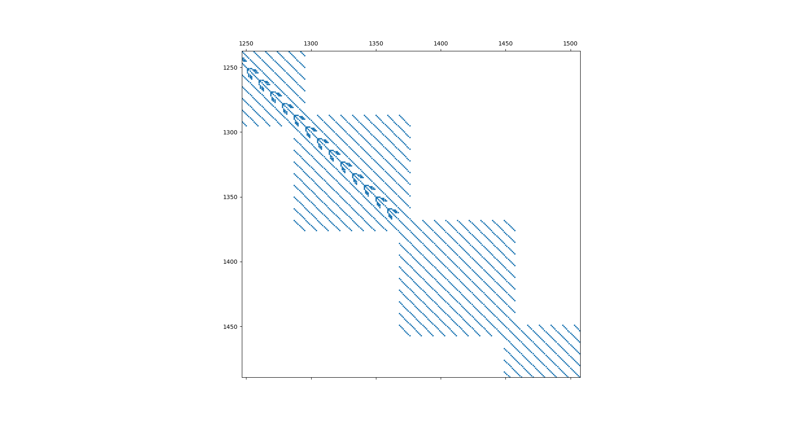

Public API: CHIRALEX package
Propagation of the wavepacket (propagate)
pecd.propagate.Propagator
Wavefunction module (wavefunction)
|
Map class keeps methods for generating and manipulating index mapping for the wavefunction and matrices. |
|
Class contains methods related to the radial grid. |
- class pecd.wavefunction.Map(femlist, map_type, job_dir, lmax=0)
Map class keeps methods for generating and manipulating index mapping for the wavefunction and matrices.
Note
The characteristics of the photo-electron propagation using the FEM-DVR method suggests that a DVR-type mapping is suitable and natural.
- femlist
keeps sizes of radial bins and the number of points/functions in each bin. Format: [ [nbins,nlobs,Rbin], … ].
- Type
list
- map_type
type of mapping function (‘DVR’ or ‘SPECT’)
- Type
str
- job_dir
path to current working directory
- Type
str
- Parameters
lmax (int) – maximum value of the l quantum number
- genmap_femlist()
Driver routine to call map generators
- Returns: tuple
- maparray: list
[[ibin,n,ipoint,l,m,id],…]
- Nbas: int
Number of basis functions
- map_dvr_femlist_nat()
Generates an index map for coupled basis with grid points as major dimension and bridge points/functions placed as last in the bin.
- Returns: tuple
- maparray: list
[[ibin,n,ipoint,l,m,id],…]
- Nbas: int
Number of basis functions
Note: the convention adopted to generate the index map assumes that all radial indices start with 0. This python-compatible convention helps to clear out any confusions. The resulting matrix structure is close to block-diagonal, with single-point sized bridges between bins, as shown in the image below:
Examples
ibin n ipoint l m id
Status: tested
{kind=link}
- class pecd.wavefunction.GridRad(nlobs, nbins, binwidth, rshift)
Class contains methods related to the radial grid.
- Attrs:
- nlobsint
number of Gauss-Lobatto functions per bin
- nbinsint
number of bins
- binwidthfloat
width (a.u.) of the bin
- rshiftfloat
shift of the grid (a.u.)
- gen_grid()
- Generates radial grid based on Gauss-Lobatto quadrature points
Three grids are returned: quadrature grid, primitive grid, coupled grid used in final calculation.
Returns: tuple x: numpy 1D array (float, size = nlobs)
Gauss-lobatto quadrature grid
- w: numpy 1D array (float, size = nlobs)
Gauss-lobatto quadrature weights
- rgrid_prim: numpy 1D array (float, size = nlobs * nbins)
Primitive radial grid containing all grid points, plus point values at bin boundries are duplicated i.e. first point in the bin has equal value to last point from previous bin.
- rgrid: numpy 1D array (float, size = Nr = (nlobs - 1)*nbins - 1)
Coupled radial grid with boundary points excluded and no duplicate points at bin boundaries.
- Nr: int
number of coupled grid points
Todo: this function must be generalized to account for FEMLIST. Presently only constant bin size is possible.
Status: tested
Electric field module (field)
pecd.field.Field
- class pecd.field.Field(params)
Class representing electric field
- Parameters
filename – str Name of the HDF5 file from which tensor data is loaded.
- Kwargs:
- threshfloat
Threshold for neglecting matrix elements when reading from file
- Attrs:
- rankint
Rank of tensor operator.